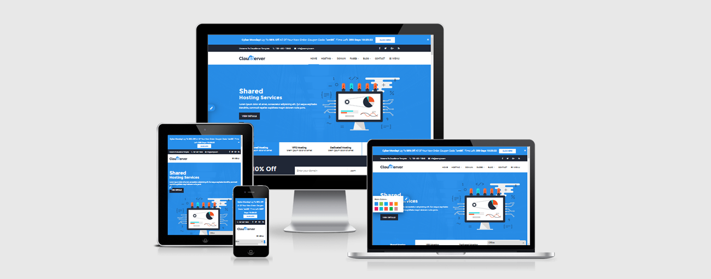
CloudServer
Responsive HTML5 Technology, Web Hosting and WHMCS Template
Thank you for purchasing our theme. If you have any questions that are beyond the scope of this help file, please feel free to email via our user page contact form. Thank you so much!
How to get help:
We run support 24/7. You can expect a response within 24 hours.
- Support Requests Are For:
- - Help Using Templates
- - Instructions Setting Up Templates
- - Bug Reports And Fixes
- Support Requests Aren’t For:
- - Help With 3rd Party Plugins
- - Integration of 3rd Party Plugins
- - Free Customization Requests of Our Templates
[Note: Need Some Premium Customization Done. Contact Us Via Our User Page Contact Form. ]
INTRODUCTION
CloudServer is a Responsive HTML5 Technology, Web Hosting and WHMCS Template designed for All kinds of Technology, Domain and Hosting Business. It's an HTML5 template based on latest Bootstrap 3.3.7. Also included 10 WHMCS Template based on WHMCS v7.2. Anyone can easily update/edit this plugin to follow our Well Sorted Documentation.
Mainly, our template is an HTML template and we just provided support by customizing WHMCS header and footer and color based on our template for FREE of cost with our HTML template.
Main Features of "CloudServer":
- - Latest Bootstrap v3.3.7 Ready
- - WHMCS v7.2 Ready
- - Total 10 WHMCS Templates with 10 Different Color Version
- - Working Domain Checker
- - Working Login Page
- - Live Chat Widget Included
- - Retina Ready
- - 10 Default Color with Color Switcher
- - Clean Design
- - Fully Responsive
- - Working Contact Form Integrated With Validetor and PHP
- - Google Font Used
- - FontAwesome Icons
- - Modern Cross Browser Support
- - W3C Validated Code
- ./main_files
- /html-template
- index.html
- about.html
- affiliate.html
- blog.html
- blog-details-left.html
- blog-details-right.html
- contact.html
- datacenter.html
- dedicated-hosting.html
- domain.html
- faq.html
- gallery.html
- login.html
- reseller-hosting.html
- service-details.html
- shared-hosting.html
- testimonial.html
- vps-hosting.html
- 404.html
- style.css
- sendmail.php
- /whmcs-template
- /whmcs-7
- CloudServer01
- CloudServer02
- CloudServer03
- CloudServer04
- CloudServer05
- CloudServer06
- CloudServer07
- CloudServer08
- CloudServer09
- CloudServer010
The "CloudServer" template is a responsive HTML template based on Bootstrap 3.3.7. The structure based on a flexible grid that lets you change HTML pages quickly and logically with a nestable system.
If you would like to edit the layout of any elements in whole template, you would do the following:
Open any '.html' or, '.css', so that is extremely easy to change any html markup and css attributes. Simply find the related and commented heading in the html or, css file and make your magic.
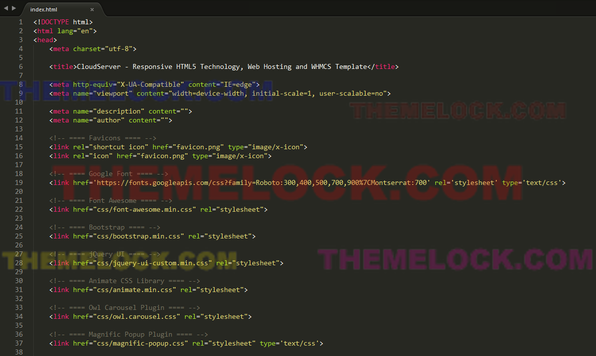
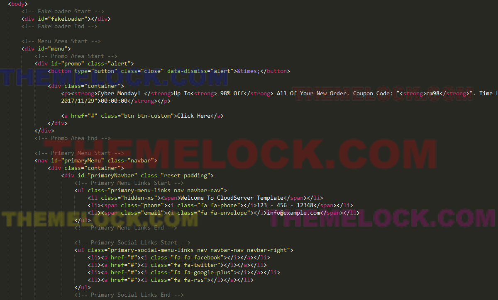
"CloudServer" using the following CSS files:
css/bootstrap.min.css
The main responsive grid stylesheets, from Bootstrap 3 framework. It is recommended to make any changes/additions to style.css and keep bootsrap.css and bootsrap-theme.css as it are. In this way, you can easily upgrade the grid framework when Bootstrap releases an update.
css/jquery-ui.min.css
The main responsive grid stylesheets, from Bootstrap 3 framework. It is recommended to make any changes/additions to style.css and keep bootsrap.css and bootsrap-theme.css as it are. In this way, you can easily upgrade the grid framework when Bootstrap releases an update.
css/animate.min.css
The css file using for css animations
css/owl.carousel.css
The css file using for owl carousel plugin
css/magnific-popup.css
The css file using for magnific popup plugin
css/fakeLoader.css
The css file using for fake loader plugin
style.css
The main css file
css/responsive-style.css
The css file for mobiles
css/colors/theme-color-1.css
The css file for color scheme
css/custom.css
The css file for custom styles
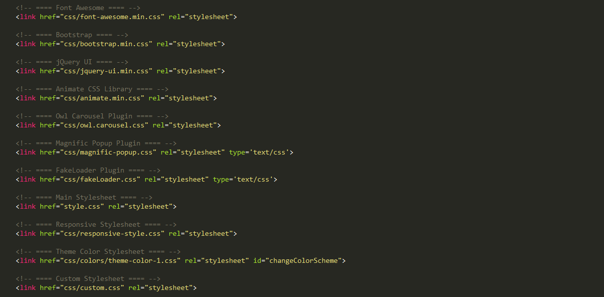
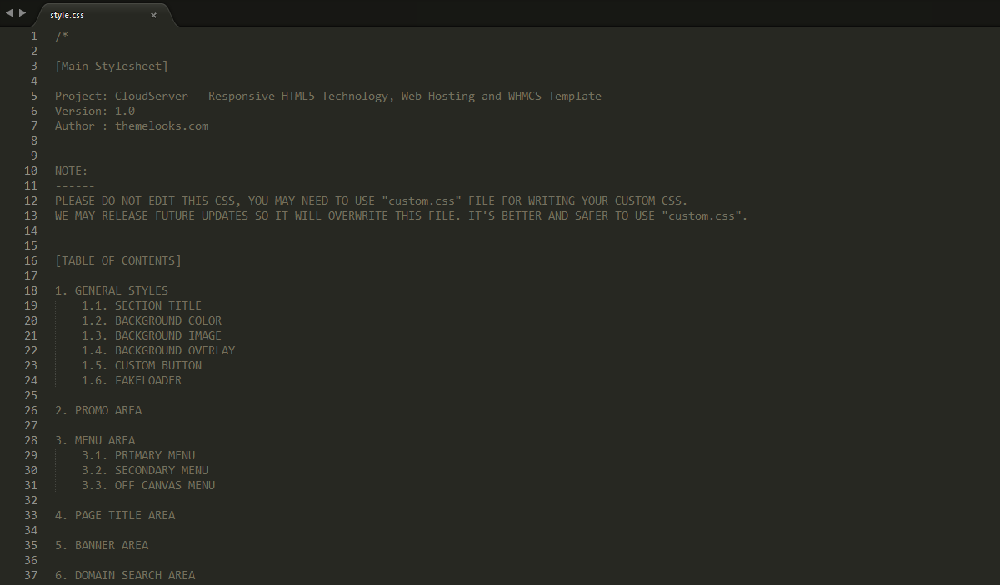
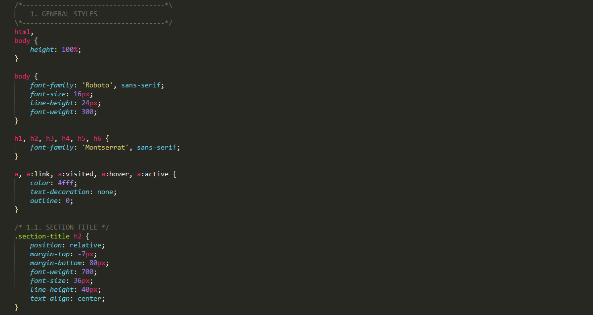
js/jquery-3.1.0.min.js
The jQuery Library
js/jquery-ui.min.js
The jQuery UI using for vps slider etc.
js/jquery.ui.touch-punch.min.js
The script using for jqueryui mobile touch events.
js/bootstrap.min.js
The main js file that hook the supported scripts of Bootstrap 3 framework
js/fakeLoader.min.js
The script that using for custom preloader
js/jquery.sticky.js
The script that using for sticky menu
js/owl.carousel.min.js
The script that using for slider
js/isotope-docs.min.js
The script that using for gallery
js/jquery.tubular.1.0.js
The script that using for background video
js/jquery.magnific-popup.min.js
The script that using for image popups
js/jquery.validate.min.js
The script that using for image popups
js/animatescroll.min.js
The script that using for smooth scrolling
js/jquery.waypoints.min.js
The script that using for scroll events
js/jquery.counterup.min.js
The script that using for counter
js/jquery.countdown.min.js
The script that using for promo bar
js/custom-color-switcher.js
The script that using for color switcher
js/retina.min.js
The script that using for hight resolution images
js/main.js
The main script for the template
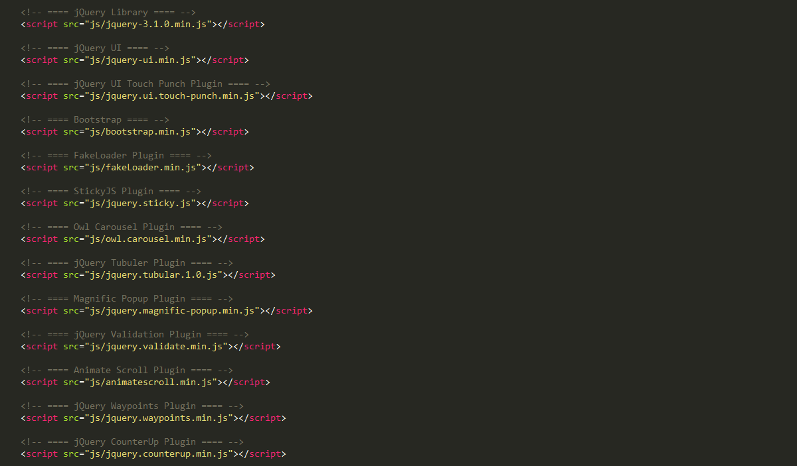
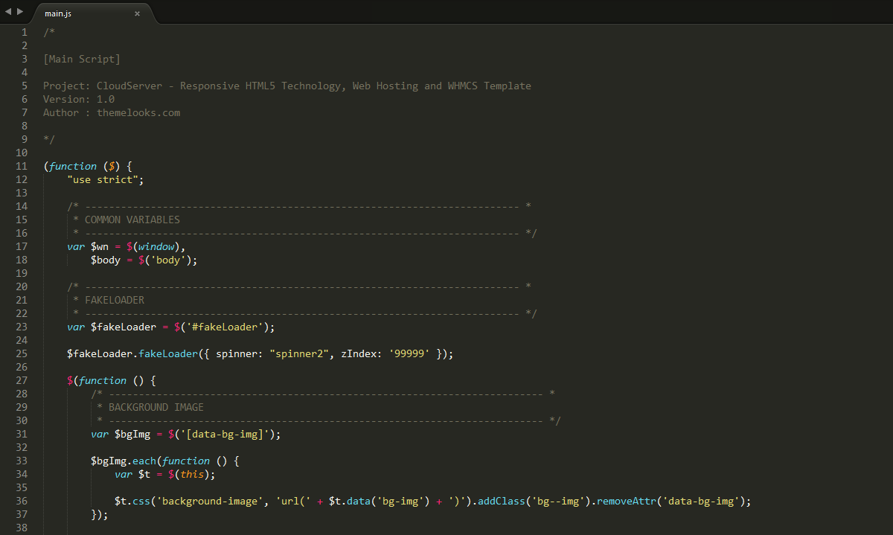
Via FTP:
1. Open up your 'FTP Software' of choice and connect to your hosting
2. Browse to required directory (Normally: ./public_html)
3. Unzip the 'main_files.zip' and choose which templates to upload.
4. Upload the template to the server.
Once you finished setup successfully, you can customize it as you want. Below are some common customization questions.
Q. How To Remove Preloader?
- Open '.html' file. (For Example: 'index.html')
- Find the comment 'FakeLoader Start'
- Then the remove code block
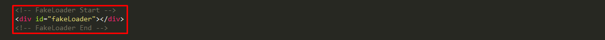
Q. How To Change Promo Bar Text and Date/Time?
- Open '.html' file. (For Example: 'index.html')
- Find the comment 'Promo Area Start'
- Then update the date
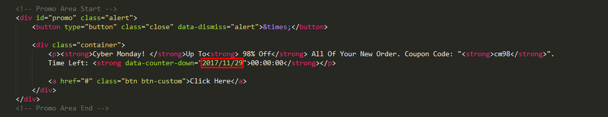
Q. How To Change Topbar Text and Social Links?
- Open '.html' file. (For Example: 'index.html')
- Find the comment 'Primary Menu Start'
- Then update text and links
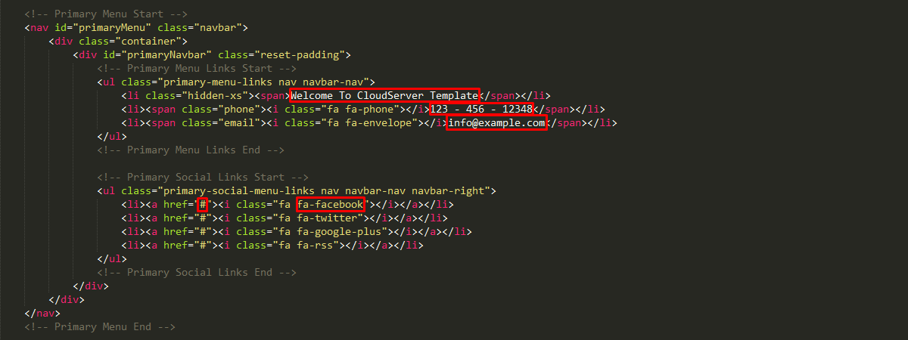
Q. How To Change Logo?
- Open '.html' file. (For Example: 'index.html')
- Find the comment 'Logo Start'
- Update the 'src' value of img tag
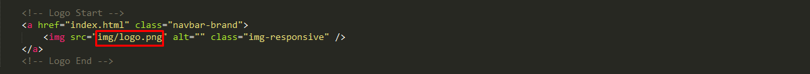
Q. How To Change Off-Canvas Logo?
- Open '.html' file. (For Example: 'index.html')
- Find the comment 'Off-Canvas Menu Logo Start'
- Update the 'src' value of img tag
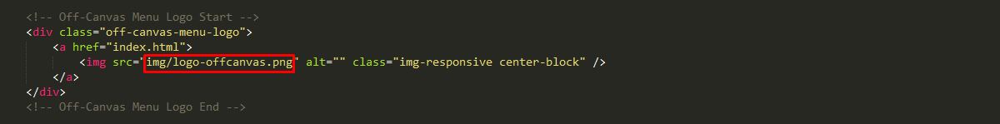
Q. How To Change Off-Canvas Menu Links?
- Open '.html' file. (For Example: 'index.html')
- Find the comment 'Off-Canvas Menu Links Start'
- Update the lists and links
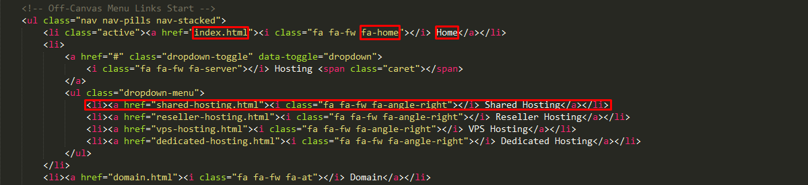
Q. How To Change Banner Slider Text?
- Open '.html' file. (For Example: 'index.html')
- Find the comment 'Banner Item Content Start'
- Update the contents
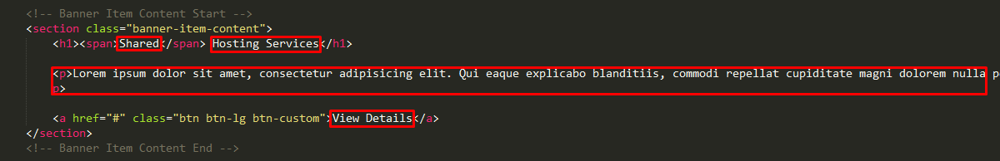
Q. How To Change Banner Slider Image?
- Open '.html' file. (For Example: 'index.html')
- Find the comment 'Banner Item Image Start'
- Update the location of the img tag
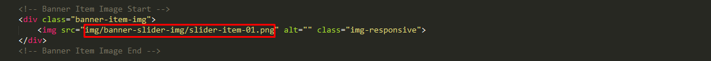
Q. How To Change Banner Slider Background Image?
- Open '.html' file. (For Example: 'index.html')
- Find the comment 'Banner Item Start'
- Update the image location of 'data-bg-img' attribute
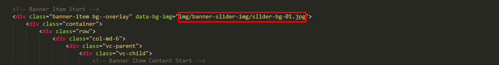
Q. How To Change Banner Slider Background Video?
- Open '.html' file. (For Example: 'index.html')
- Find the comment 'Banner Item Start'
- Update location of 'data-bg-video' attribute with any 'youtube video id'
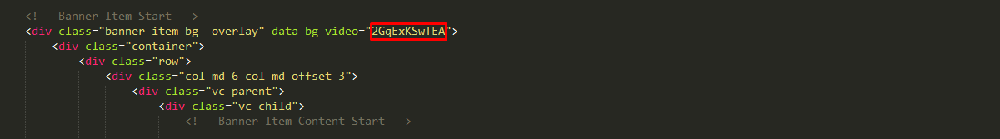
Q. How To Change Banner Slider Nav?
- Open '.html' file. (For Example: 'index.html')
- Find the comment 'Banner Slider Nav Start'
- Update the list items
Q. How To Change Domain Search Form Redirect Link?
- Open '.html' file. (For Example: 'index.html')
- Find the comment 'Domain Search Form Start'
- Update the action link
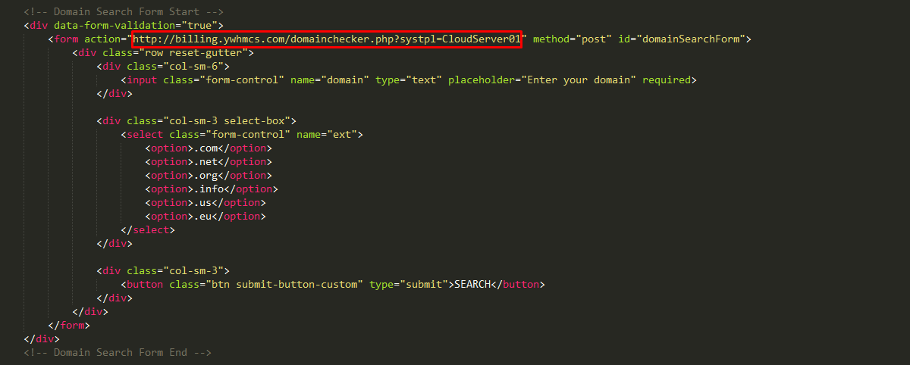
Q. How To Change Login Form Redirect Link?
- Open '.html' file. (For Example: 'index.html')
- Find the comment 'Login Area Start'
- Update the action link
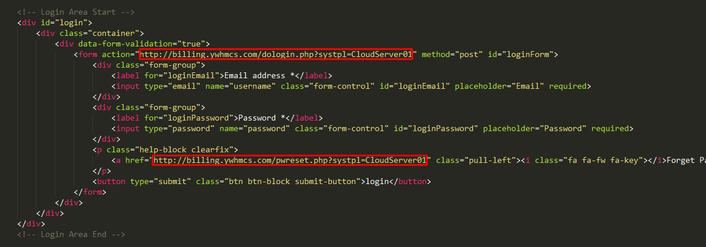
Q. How To Change Pricing Contents?
- Open '.html' file. (For Example: 'index.html')
- Find the comment 'Pricing Item Start'
- Update the contents
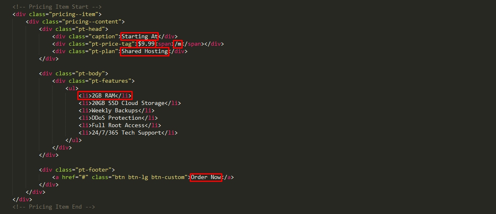
Q. How To Change Domain/Dedicated Pricing Content?
- Open '.html' file. (For Example: 'index.html')
- Find the comment 'Dedicated Pricing Area Start' / 'Domain Pricing Area Start'
- Update the contents
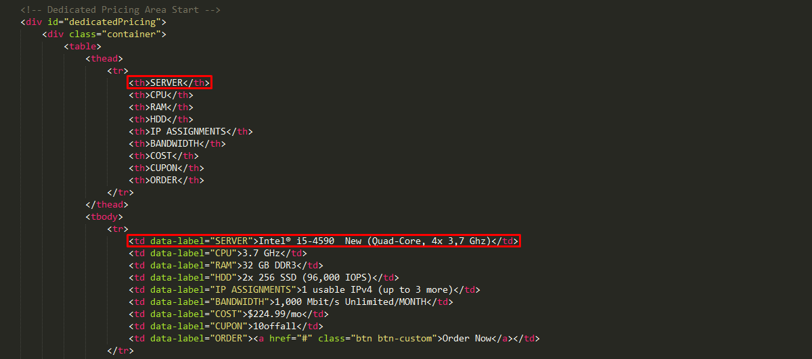
Q. How To Change Mailchimp Subcription List Link?
- Open '.html' file. (For Example: 'index.html')
- Find the comment 'Subscribe Form Start'
- Get you list link from mailchimp and replace 'action' attribute
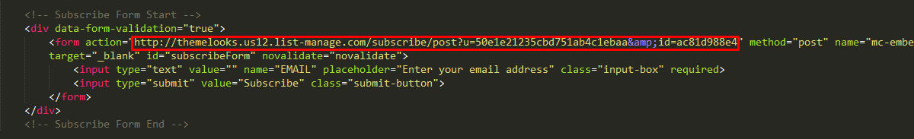
Q. How To Change Counter Item Text and Icon?
- Open '.html' file. (For Example: 'index.html')
- Find the comment 'Counter Item Start'
- Update the text, numbers and fontawesome icon
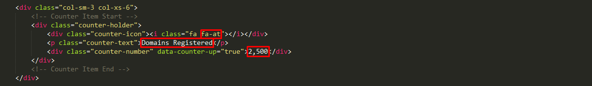
Q. How To Change Features Tab Text and Image?
- Open '.html' file. (For Example: 'index.html')
- Find the comment 'Features Tab Item Start'
- Update the text and image
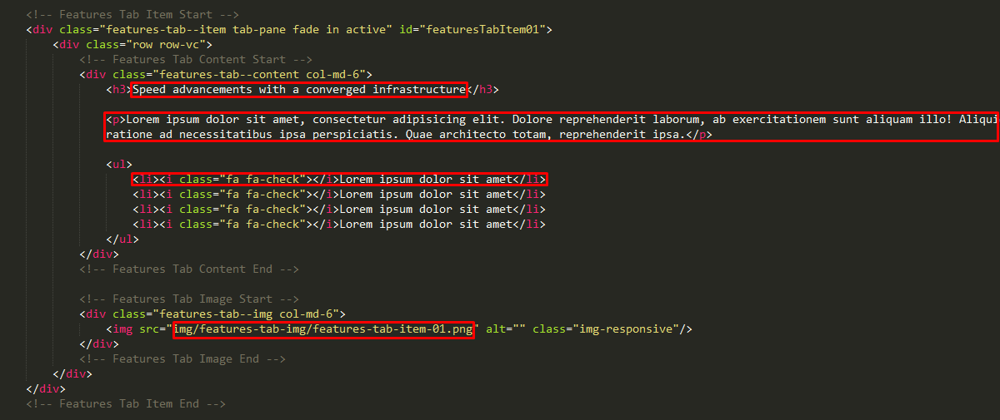
Q. How To Change Testimonial Title Counter Numbers?
- Open '.html' file. (For Example: 'index.html')
- Find the comment 'Testimonial Area Start'
- Update the counter numbers
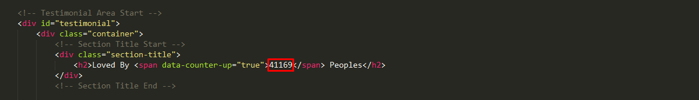
Q. How To Change Testimonial Item Content?
- Open '.html' file. (For Example: 'index.html')
- Find the comment 'Testimonial Item Start'
- Update the contents
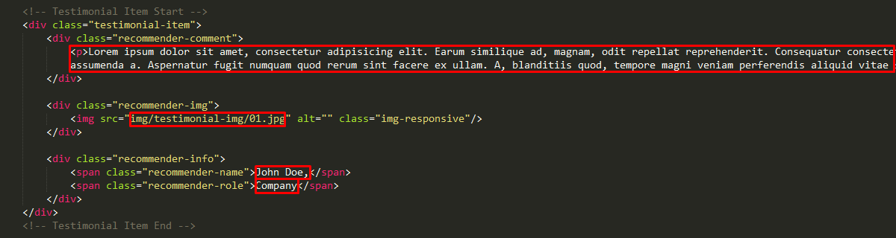
Q. How To Remove Live Chat Widget?
- Open 'main.js' file.
- Find the comment 'LIVE CHAT WIDGET'
- Remove the code block
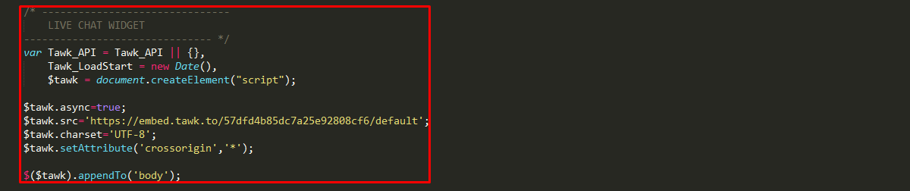
Q. How To Change Live Chat Widget?
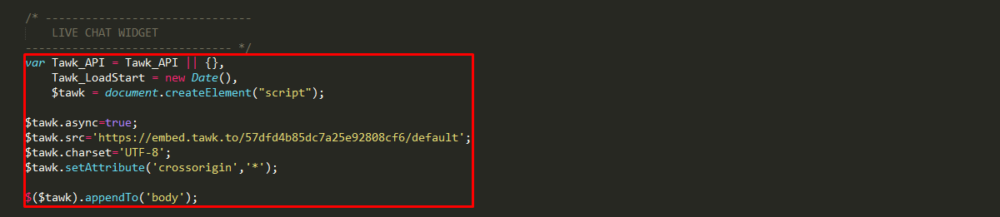
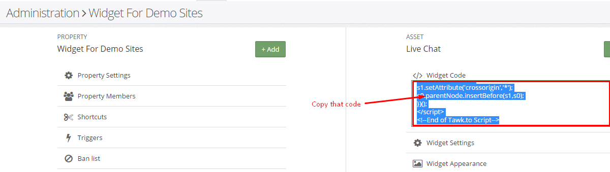
Q. How To Change VPS Plans?
- Open 'json/vps-plans.json' file.
- Update the values
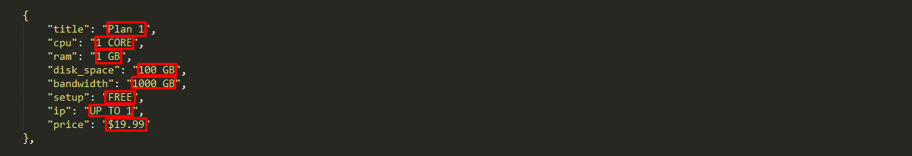
Q. How To Change Team Member Info?
- Open 'about.html' file.
- Find the comment 'Team Member Item Start'
- Update the text and social links
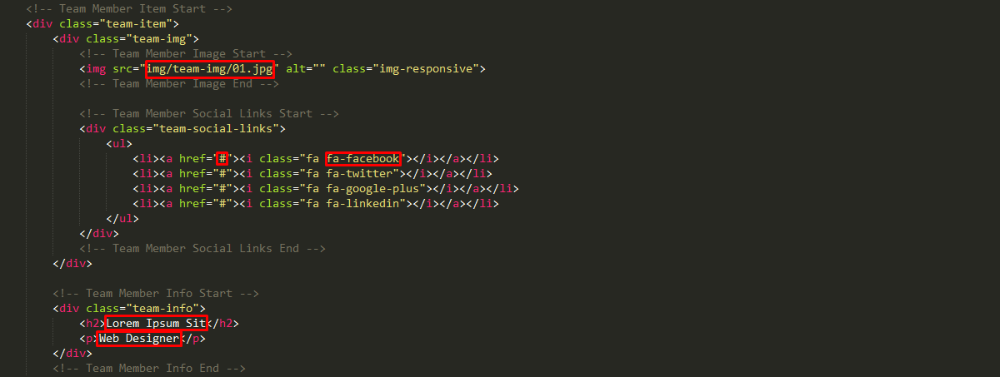
Q. How To Change History Item Content?
- Open 'about.html' file.
- Find the comment 'History Area Start'
- Update the text

Q. How To Change Datacenter Map Locations?
- Open 'datacenter.html' file.
- Find the comment 'MAP Area Start'
- Update the text
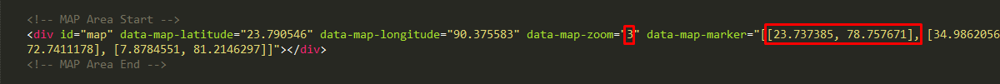
Q. How To Change FAQ Question?
- Open '.html' file. (For Example: 'shared-hosting.html')
- Find the comment 'Accordion Item Start'
- Update the text
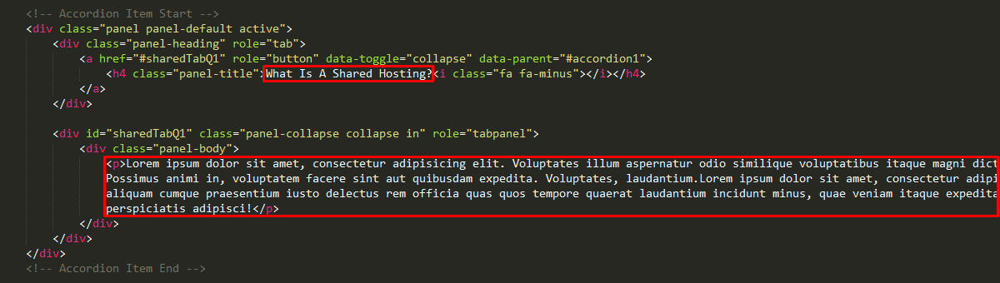
Q. How To Change Affiliate Counter Text?
- Open 'affiliate.html' file.
- Find the comment 'Counter Item Start'
- Update the text and numbers
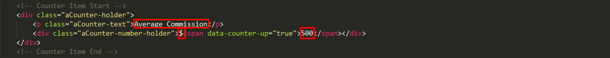
Q. How To Change Contact Address and Social Links?
- Open 'contact.html' file.
- Find the comment 'Contact Address Area Start'
- Update the text and links
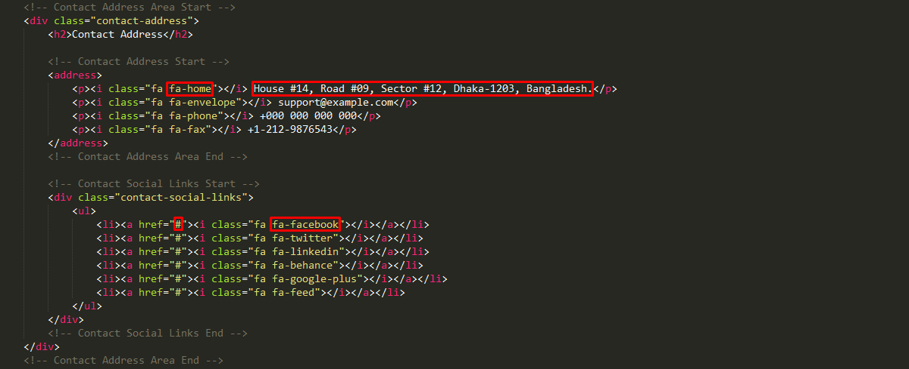
Q. How To Change Contact Form Email Address? (Sendmail.php)
- Open 'sendmail.php' file.
- Find the comment '// Replace this with your own email address'
- Update the email address and name
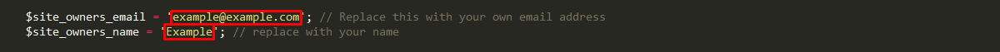
Q. How To Change Contact Map Location?
- Open 'contact.html' file.
- Find the comment 'MAP Area Start'
- Update the 'data-map-latitude', 'data-map-longitude', 'data-map-zoom' and 'data-map-marker'
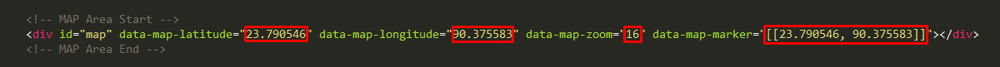
Q. How To Change Contact Info Text?
- Open '.html' file. (For Example: 'index.html')
- Find the comment 'Contact Info Item Start'
- Update the link and text
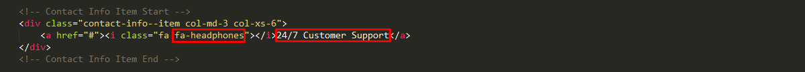
Q. How To Change Footer Social Widget?
- Open '.html' file. (For Example: 'index.html')
- Find the comment 'Footer Social Widget Start'
- Update the list and links
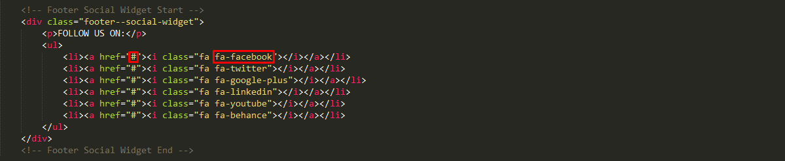
Q. How To Change Copyright Text?
- Open '.html' file. (For Example: 'index.html')
- Find the comment 'Copyright Text Start'
- Update the text as you like
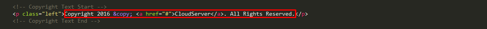
Photos:
- All 'images' used on the demo site is for demonstration purposes only and are not included in the main download file.
- All images collected from 'Google Image Search'
Fonts Used:
Frameworks / Libraries:
Plugins Used:
28 May, 2017 - Version 1.3 (Changelog)
// # List of updates
// ------------------------------
*. WHMCS template updated to be compatible with latest "WHMCS Version 7.2"
18 January, 2017 - Version 1.2 (Changelog)
// # List of updates
// ------------------------------
*. PHPMailer security update